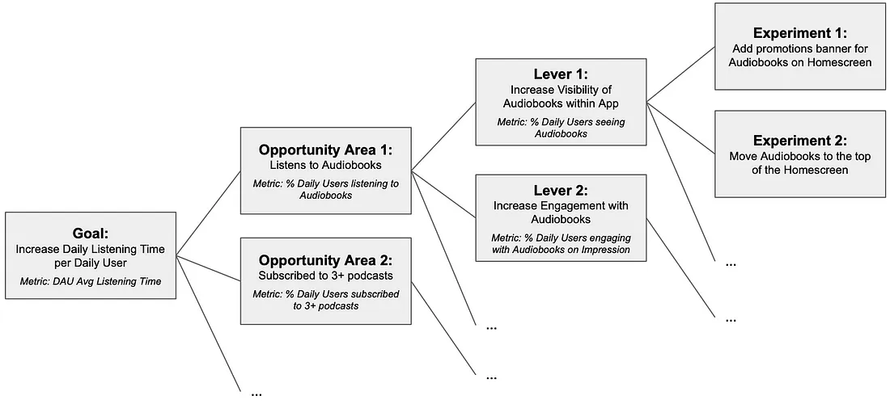
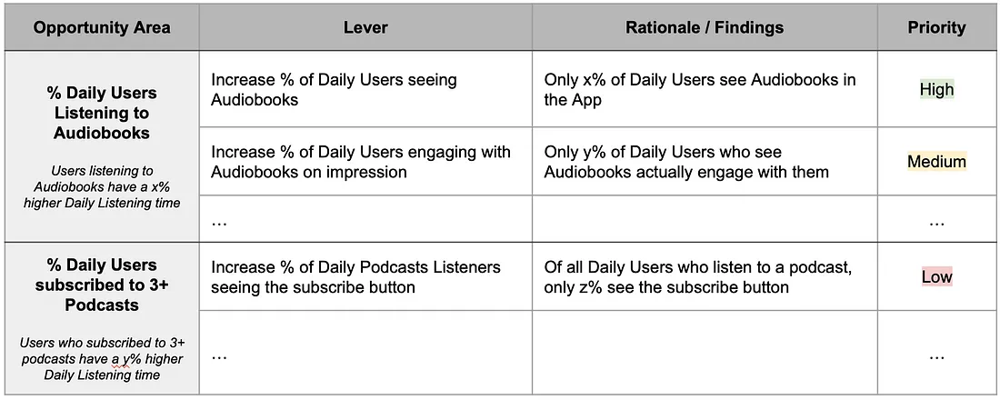
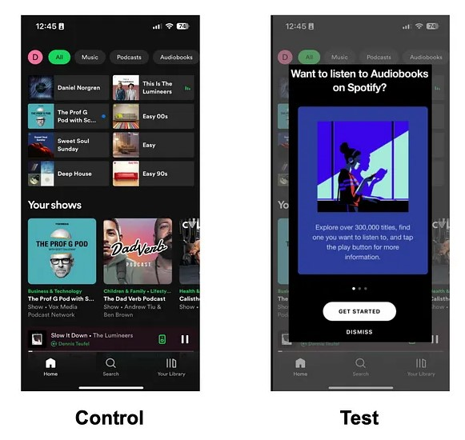
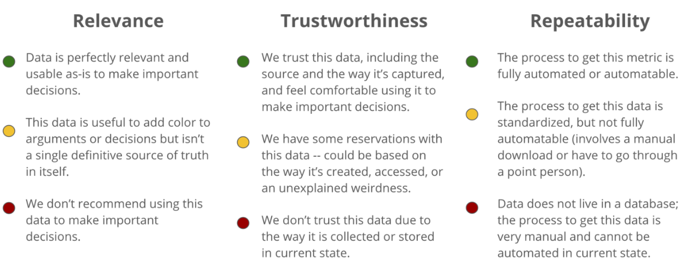

Analyses
Misc
- Also see
- Logistics, Demand Planning >> Stakeholder Questions
- These are questions for the stakeholder(s) when preparing to create a forecasting model, but many apply to other types of projects including Analysis.
- Project, Development >> CRISP-DM
- Project, Development >> Agile >> Data Science Lifecycle
- Logistics, Demand Planning >> Stakeholder Questions
- See Thread on an analysis workflow using {targets}
General
- General Questions
- “What variables are relevant to the problem I’m trying to solve?”
- “What are the key components of this data set?”
- “Can this data be categorized?”
- “Is this analysis result out of the ordinary?”
- “What are the key relationships?”
- “Is this the best way this company could be carrying out this task?”
- “What will happen under new conditions?”
- “What factors are best used to determine or predict this eventuality?”
- Break down the problem into parts and focus on those during EDA
- Also see Decison Intelligence >> Mental Models for details on methods to break down components
- Example: Why are sales down?
- How are sales calculated?
- e.g. Total Sales = # of Orders * Average Order Value
- Breakdown # of orders and average order value
- number of orders = number of walk-ins * % conversion
- Has walk-ins or conversion declined?
- Average Order Value
- Bin avg order value by quantiles, plot and facet or group by binned groups. Is one group more responsible for the decline than others?
- number of orders = number of walk-ins * % conversion
- Is there regional or store or brand variability? (grouping variables)
- How are sales calculated?
- Drill down into each component until the data doesn’t allow you to go any farther.
- Segment data by groups
- Color or facet by cat vars
- Pay attention to counts of each category (may need to collapse categories)
- Common segments in product analytics
- Free vs Paid users
- Device Type (desktop web vs mobile web vs native app)
- Traffic Source (people coming from search engines, paid marketing, people directly typing in your company’s URL into their browser, etc.)
- Day of the Week.
TROPICS framework
- Misc
- For analyzing changes in key performance metrics
- From https://towardsdatascience.com/answering-the-data-science-metric-change-interview-question-the-ultimate-guide-5e18d62d0dc6
- Components: Time, Region, Other Internal Products, Platform, Industry and Competitors, Cannibalization, Segmentation
- Time
- What to explore
- How has our performance been trending over the last few weeks (or months)?
- Example: If we saw a 10% increase in the last week, was the percentage change in the weeks before also 10%? In which case the 10% may actually be pretty normal? Or was the change lower? Higher?
- Is this change seasonal? Do we see the same spike around this time each year?
- Example: Does WhatsApp see a spike in messages sent during the holiday season?
- Was the change sudden or gradual? Did we see a sudden spike or drop overnight? Or has the metric gradually been moving in this direction over time?
- Example: If product usage jumps by 50% overnight could there be a bug in our logging systems?
- Are there specific times during the day or week where this change is more pronounced?
- How has our performance been trending over the last few weeks (or months)?
- Solution examples
- If the change is seasonal then there may not necessarily be anything you need to ‘solve’ for. But, you can leverage this to your advantage.
- Example: Amazon sales may jump up on Black Friday so they would want to make sure they have the proper infrastructure in place so the site doesn’t crash. They may also see if there are certain types of products that are popular purchases and increase their inventory accordingly.
- If there is a sudden decline, there may be a bug in the logging or a new feature or update recently launched that’s creating problems that you may need to roll back.
- If there’s a gradual decline, it may indicate a change in user behavior.
- Example: If the time spent listening to music is declining because people prefer to listen to podcasts then Spotify may want to focus more of their content inventory on podcasts.
- If the change is seasonal then there may not necessarily be anything you need to ‘solve’ for. But, you can leverage this to your advantage.
- What to explore
- Region
- What to explore
- Is this change concentrated in a specific region or do we see a similar change across the board?
- Solution examples
- There may be newly enforced regulations in countries that are affecting your product metrics. You would need to do further research to assess the impacts of these regulations and potential workarounds.
- Example: Uber was temporarily banned in London in 2019 for repeated safety failures which resulted in a series of lawsuits and court cases.
- Popular local events may also be potential explanations. While these may not be areas to ‘solve’ for they can be opportunities to take advantage of.
- Example: Coachella season means a jump in the number of Airbnb bookings in Southern California that are capitalized on by surge pricing.
- There may be newly enforced regulations in countries that are affecting your product metrics. You would need to do further research to assess the impacts of these regulations and potential workarounds.
- What to explore
- Other Internal Products
- What to explore
- Is this change specific to one product or is it company-wide? How does this metric vary across our other product offerings?
- Example: If the Fundraising feature on Facebook is seeing increased usage, is the swipe up to donate feature on Instagram (which Facebook owns) also seeing a similar uptick?
- Are there other metrics that have also changed in addition to the one in question?
- Example: If the time spent on Uber is going down, is the number of cancellations by drivers also declining (implying people are spending less time on the app because they’re having a more reliable experience)?
- Is this change specific to one product or is it company-wide? How does this metric vary across our other product offerings?
- Solution examples
- If there is a metric change across our other features and products, it’s likely a larger problem we should address with multiple teams and may need a Public Relations consultant.
- Example: Elon + Twitter.
- If there is a metric change across our other features and products, it’s likely a larger problem we should address with multiple teams and may need a Public Relations consultant.
- What to explore
- Platform
- What to explore
- Mobile vs Desktop?
- Mac vs Windows?
- Android vs iOS?
- Solution examples
- If there was a positive change in our metric on a specific platform (e.g. iOS) and coincides with an (iOS) update we released, we would want to do a retrospective to determine what about that update was favorable so we can double down on it. Alternatively, if the metric change was negative, we may want to reconsider and even roll back the update.
- If the change was due to a change in the platform experience (e.g. app store placement, ratings) we may want to seek advice from our marketing team since this is a top of the funnel problem
- If users are showing astrong preference for a specific platform, we want to make sure that the experience of the preferred platform is up to par. We also need to make sure our platform-specific monetization strategies are switching to follow the trend.
- What to explore
- Industry & Competitors
- What to explore
- When our decline began, was there a new competitor or category that emerged?
- Have competitors changed their offering lately?
- Is the category as a whole declining?
- Solution examples
- If the category is shifting as a whole, we should begin looking at larger-scale changes to the app.
- Example: What Kodak should have done.
- If there’s a new competitor taking our market share, we can begin with reactivation campaigns on churned users. We may also want to conduct user research to understand the gap between our offering and those of our competitors
- If the category is shifting as a whole, we should begin looking at larger-scale changes to the app.
- What to explore
- Cannibalization
- What to explore
- Are other products or features in our offering experiencing growth in the face of our decline or vice versa?
- Have we released a new feature that is drawing users away from our old features? If so, can we fully attribute the release of the new feature with the decline in the metric of our feature in question?
- Example: When Facebook released reactions, did the number of comments on a post go down because people found it easier to press a react button instead of writing a comment?
- Solution examples
- Cannibalization may not necessarily be a bad thing. We need to determine whether this shift in user interest across our features is favorable by determining whether the new features align better with the goals of the business.
- Cannibalization may also be an indication of but it is indicative of a change in user behavior. In which case we may want to consider if perhaps our core metrics need to change as user behaviors change.
- Example: If users care more about watching Instagram stories than engaging with the Instagram feed we may want to optimize for retention (because the ephemeral nature of stories is more likely to motivate users to keep coming back to the platform) instead of time spent on the app.
- We can also look at ways to bridge the two features together to create a more unified platform.
- What to explore
- Segmentation
- What to explore
- How does this metric vary by user type:
- Age, sex, education
- Power users versus casual users * New users versus existing users
- How does this metric vary by different attributes of the product:
- Example: If the time spent watching YouTube videos is going down, is it across longer videos or shorter clips? Is it only for DIY videos or interview tutorial content? Is the same number of people that started watching a video the same but a large chunk of them stop watching it halfway through?
- How does this metric vary by user type:
- Solution examples
- If the metric varies between new and existing users then maybe there is a overcrowding effect.
- Example: Reddit forums could hit a critical mass where new users feel lost and less likely to engage than existing users resulting in a drop in engagements per user
- If users are dropping off at certain parts of the funnel then maybe the experience at that funnel step is broken.
- Example: While the same number of people are starting carts on Amazon there may be a drop in purchases if the payment verification system isn’t working.
- If the metric varies between new and existing users then maybe there is a overcrowding effect.
- What to explore
Actionable Analyses
- Notes from: Driving Product Impact With Actionable Analyses
- Actionable insights do not only provide a specific data point that might be interesting, but lay out a clear narrative how this insight is connected to the problem at hand, what the ramifications are, as well as possible options and next steps to take with the associated benefits/risks of (not) acting upon these.
- Not Actionable: Users under the age of 25 hardly use audiobooks.
- Is this good, bad? Should they be listening to audiobooks and is there anything we should do about it?
- Actionable: Users under the age of 25 hardly use audiobooks because they never explore the feature in the app. However users who listen to audiobooks have a 20% higher retention rate.
- This information tells us that audiobooks represent a potential opportunity to increase retention amongst younger users, however there seems to be more work to be done to encourage users exploring this feature.
- Steps
- Problem Statement: High-level business problem to solve (e.g. Increasing Retention, Conversion Rate, Average Order Value)
- Can also be in regards to a metric that’s believed to be highly associated with a North Star metric like a Primary metric (See KPIs)
- Opportunity Areas: Areas or problems with a strong connection to the problem at hand
Investigate behaviors of users with the behavior that you’re interested in (i.e. high or low values of the desired metric).
Discovering the characteristics of these users can help to figure out ways to encourage other users to act similarily or gain insight into the type of users you want to attract.
- Levers: Different ways to work on the opportunity areas
- A lever should be data-based and able to be validated on whether working to increase or decrease the lever will lead to a positive solution to the problem statement.
- There are typically multiple levers for a given opportunity area
- These should be ordered in terms of priority, and priority should be given to the lever that is believed to result in the greatest impact on the opportunity area that will result in the greatest impact on the solution to the problem statement.
- Experiments [Optional]: Concrete implementation of a specific lever that can help prove/disprove our hypotheses.
- Optional but always helpful to convey recommendations and suggestions with concrete ideas for what the team could or should be building.
- Problem Statement: High-level business problem to solve (e.g. Increasing Retention, Conversion Rate, Average Order Value)
- Example
- Problem Statement: How can we increase daily listening time for premium users in the Spotify app?
- Hypothesis: Daily Listening Time is strongly connected to retention for premium users and hensce to monthly revenue.
- Opportunity Areas:
- Users who use auto-generated playlists have a x% higher daily listening time
- Users who subscribed to at least 3 podcasts have a x% higher listening time per day than those who did not subscribe to any.
- Users who listen to audiobooks have a x% higher daily listening time.
- Levers:
- Opportunity Area: Increase the percentage of users under 25 using audiobooks from x% to y%.
- Questions:
- Do users not see the feature?
- Do users see the feature but don’t engage with the feature?
- Do users engage with the feature but drop off after a short amount of time?
- Finding: Users under 25 engage less with the Home Screen, the only screen where Audiobooks are promoted, and hence don’t see this feature in the App. This is likely leading low usage and engagement.
- Lever: Increase prominence of Audiobooks within the app
- Prioritzation Table for Report

- Experiments:
- “We predict that adding a banner promoting Audiobooks when the App opens [Experiment Change] will increase younger users’ daily listening time [Problem] because more younger users will see and listen to Audiobooks [Lever]. We will know this is true when we see an increase in young users using Audiobooks [Lever], followed by an increase in the daily listening time for younger users [Validation Metrics].”
- If there is no significant increase in audiobook usage, then there many other ways to increase the visibility of a feature which can be the hypotheses of further experiments.
- If , however, there is a significant increase in users using Audiobooks (lever) but no effect on daily listening time (main problem), then the lever is invalidated and we can move on to the next one.
- Problem Statement: How can we increase daily listening time for premium users in the Spotify app?
{kind=link}
{kind=link}
{kind=link}
Exploratory Data Analysis Research Plan
- Notes from Pluralsight Designing an Exploratory Data Analysis Research Plan
- See code >> rmarkdown >> reports >> edarp-demo.Rmd
- During the development of the EDARP, all stakeholders can align their expectiations. Buy-in from the aligned stakeholders can help sell the project to the organization.
- Each section should have an introduction with a description about whats in it
- Mock Schedule
- Week 1: Data request by a department
- Week 2: Data Scientist and department meet to formalize the research questions
- Working backwards from the desired output can help frame the right questions to ask during this period
- Week 3: Clear metrics are established. The use case of the product is defined (i.e. who’s using it and what decisions are to be made). Sponsorship is set. Budgets are allocated.
- Week 4: EDARP is finalized with everyone understanding the objectves, budget, product design, and product usage
- Week 6: Data Scientist delivers the product to the department.
- Sections of the Report
- Abstract
- Highlights the research questions
- Who the stakeholders are
- Metrics of success
- Example:
- “The foundational task was to develop sales insights across stores. Through the identification and inclusion of various business groups, data were gathered and questions were formed. The business groups included are Marketing, IT, Sales and Data Science. From this process we defined the primary goal of this research. This research adds understanding to how sales are driven across stores and develops a predictive model of sales across stores. These outcomes fit within budget and offer an expected ROI of 10%.”
- Figures and Tables
- Optional depending on audience
- Section where all viz is at
- Introduction
- Detailed description of metrics of success
- Example
- ROI 8%
- R2 75%
- Interpretability
- Example
- Detailed description of metrics of success
- Stakeholders
- Marketing
- List of people
- IT
- Sales
- Data Science
- Marketing
- Budget and Financial Impact
- Not always known, but this section is valuable if you’re able to include it.
- Potential vendor costs
- Infrastructure costs
- Application developement
- Financial impact, completed by finance team, result in an expected ROI of blah%
- Methods
- Data description
- Data wrangling
- What were the variables of interest and why (“data wrangling involved looking at trends in sales across stores, store types, and states”)
- Autocorrelation
- “Testing for autocorrelation was completed leading to insights in seasonality across the stores. We examined by the ACF an PACF metrics in the assessment of autocorrelation”
- Clustering
- Outliers
- Autocorrelation
- Description of algorithm comparison and model selection
- Words not code or results
- Example
- Involved training and testing regression, random forest,…
- Regression model served as a benchmark comparison across 5 models
- A discussion of interpretability and expected ROI guided the choice of the final model
- What were the variables of interest and why (“data wrangling involved looking at trends in sales across stores, store types, and states”)
- Results and Discussion
- “This section highlights the thought process that went into wrangling the data and building the models. A few of the insights gained in observation of the data are shared. Also, the assessment of the model is discussed at the end of the section.”
- Visualizing the Data (i.e. EDA viz - descriptive, outliers, clusters)
- Figures
- Insights
- Repeat as needed
- Variable Importance
- Final Model
- Model Assessment
- Algorithm comparison metrics
- Dynamic visual of model output
- Simple shiny graph with a user input and a graph
- e.g. Choose store number - graph of sales forecast
- Simple shiny graph with a user input and a graph
- Model Assessment
- Conclusion
- Example:
- “The research explored the possibility of building a predictive model to aid in forecasting sales across stores. We found that, given the established metrics of ROI greater than 8%, R-square of greater than .75 and interpretability in the models, this reasearch has resulted in a viable model for the business. Additionally, it was discovered the presence of some outlier phenomena in the data which has been identified by the stakeholders as acceptable noise. Further we discovered that there is a latent grouping to the stores across sales, store type and assortment. This insight will be used to guide marketings action in the future.”
- Example:
- Appendix
- Schedule of Maintenance
- Future Research
- Abstract
Data Meta-Metrics
- Notes from Data Meta Metrics
- Metrics for categorizing the quality of data being used in your analysis
- You can be very confident about the methodologies you’re using to analyze data, but if there are issues with the underlying dataset, you might not be so confident in the results of an analysis or your ability to repeat the analysis.
- Ideally, we should be passing this information — our confidences and our doubts — on to stakeholders alongside any results or reports we share.
- Use Cases
- Convey the quality of the data and its collection process to technical and non-technical audience
- Helpful for diagnosing the strengths and weaknesses of data storage and collection across multiple departments.
- Develop a data improvement process with an understanding of what data you do and don’t have and what you can and can’t collect.
- Good data: You know how and when it’s collected, it lives in a familiar database, and represents exactly what you expect it to represent.
- Less-Than-Stellar data: Data that comes with an “oral history” and lots of caveats and exceptions when it comes to using it in practice.
- e.g. When you ask a department for data and their responses are “Anna needs to download a report with very specific filters from a proprietary system and give you the data” or “Call Matt and see if he remembers”
- Potential Metrics - The type of metrics you use can depend on the analysis your doing
- Relevance: Ability to answer the question we were asking of it
- Trustworthiness: Will the data be accurate based on how it was collected, stored, and managed?
- Repeatability: How accessible is this data? Can the ETL process be faithfully reproduced?
- Slide Report Examples
{kind=link}
{kind=link}